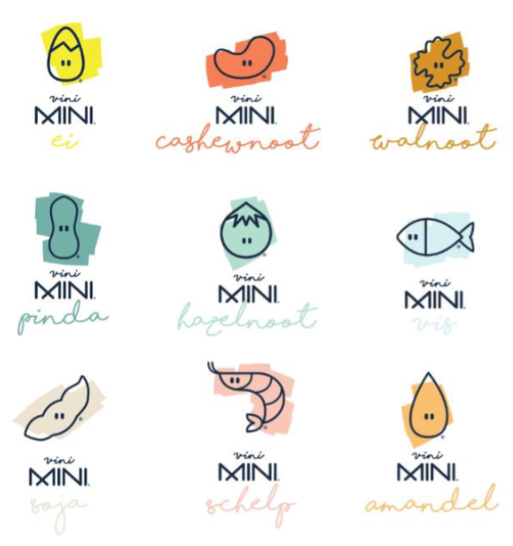
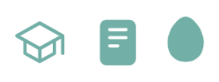
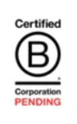

Iconen
De iconen die Vini Mini gebruikt kunnen op verschillende momenten terugkomen op de website. Het is belangrijk om steeds te kiezen uit dezelfde set iconen om verwarring te voorkomen.
Allergenen iconen:
Achtergrondinformatie van de allergenen iconen:
De iconen van Vini Mini zijn plaatjes van de verschillende allergenen. Uit het brandboek van Vini Mini heb ik begrepen dat de vis en de schelp(garnaal) hieruit weggehaald moeten worden, en dat boomnoten moeten worden toegevoegd. Momenteel worden nog niet al deze iconen gebruikt, maar Vini Mini heeft de ambitie om in de toekomst ook producten te leveren van andere allergenen. Voor informatie over de kleuren verwijs ik u naar de kleuren: kleuren.
Belangrijk bij het gebruik van de allergenen iconen:
De iconen mogen ook gebruikt worden zonder 'Vini Mini' eronder geschreven, maar mogen nooit zonder de naam/beschrijving van het icoon gebruikt worden.
Informatieve iconen:
Informatie over de informatieve iconen:
Deze 3 bovenstaande iconen worden op de website van Vini Mini weergegeven boven informatie over het waarom, wanneer en hoe je pinda & ei geeft aan je kind. De website is responsive, deze iconen blijven boven de vraagstukken staan en netjes in het midden.
Certified Corporation B Pending:
Informatie over Certified Corporation B Pending:
Een Certified B Corporation status kan een bedrijf verdienen wanneer het bedrijf de afgelopen 12 maanden geverifieerde praktijken en beleid heeft gevoerd. Vini Mini heeft de Certified B Corporation Pending status gekregen, dit betekent dat ze de tijd krijgen om zich voor te bereiden op de Certified B Corporation status. Dit icoon/logo staat onderaan op de website van Vini Mini in de footer. Op de desktop versie staat deze links onderaan, de website is responsive waardoor op kleinere schermen dit icoon bovenaan op de footer komt te staan en de andere footer onderdelen komen eronder te staan. Om te zien hoe dit eruitziet kunt u kijken op de website van Vini Mini en inspect gebruiken. Deze informatie heb ik hier gevonden: Pending B Corp - B Lab Europe (bcorporation.eu)
Don'ts:
- Je mag geen iconen gebruiken buiten de geselecteerde set iconen om verwarring te voorkomen.
- De allergenen iconen mogen nooit zonder de naam/beschrijving van het icoon gebruikt worden.
- De informatieve iconen mogen nooit onder of naast de informatie over het waarom, wanneer en hoe je pinda & ei geeft aan je kind staan.